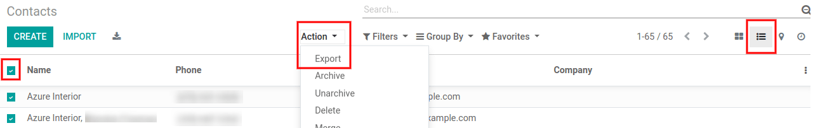

Importação e Exportação de dados¶
Exportação de dados;
Identificadores externos;
Importação de dados;
Alteração de dados em Massa;
Exportar dados do Odoo¶
Ao trabalhar com um banco de dados, às vezes é necessário exportar seus dados em um arquivo distinto. Fazer isso pode ajudar a fazer relatórios sobre suas atividades (mesmo que o Odoo ofereça uma ferramenta de relatório com cada aplicativo disponível).
Com o Odoo, você pode exportar os valores de qualquer campo em qualquer registro.
Para fazer isso, ative a visualização em lista dos itens que precisam ser exportados, clique em_Ação_** e, em seguida, em Exportar.**
Bem simples, essa ação ainda vem com algumas especificidades. Na verdade, ao clicar em Exportar, aparece uma janela pop-up com vários opções para os dados a serem exportados:

Visão geral dos dados que o usuário deseja exportar.¶
Com a opção Quero atualizar os dados marcada, o sistema apenas mostra os campos que podem ser importados. Isso é muito útil em caso você queira atualizar os registros existentes. Basicamente, isso funciona como um filtro. Deixar a caixa desmarcada dá muito mais campo opções porque mostra todos os campos, não apenas os que pode ser importado.
Ao exportar, você pode escolher entre dois formatos: .csv e .xls. Com .csv, os itens são separados por vírgula, enquanto .xls contém informações sobre todos os planilhas em um arquivo, incluindo conteúdo e formatação.
Esses são os itens que você pode querer exportar. Use as setas para exibir mais opções de subcampo. Claro, você pode usar a barra de pesquisa para encontrar campos específicos com mais facilidade. Para usar a opção de pesquisa mais eficientemente, exiba todos os campos clicando em todos os Setas; flechas!
O botão + está lá para adicionar campos à lista “para exportar”.
As “alças” ao lado dos campos selecionados permitem mover os campos para cima e para baixo para alterar a ordem em que devem ser exibidos na exportação Arquivo. #. A lixeira está lá se você precisar remover campos.
Para relatórios recorrentes, pode ser interessante salvar predefinições de exportação. Selecione todos os necessários e clique na barra de modelos. Lá, clique em Novo modelo e dê um nome ao seu. o da próxima vez que você precisar exportar a mesma lista, basta selecionar o modelo relacionado.
Warning
É bom ter em mente o identificador externo do campo. Por exemplo, Empresa Relacionada é igual a parent_id. Isso ajuda a exportar apenas o que você gostaria de importar em seguida.
Importar dados para o Odoo¶
Como começar¶
Você pode importar dados em qualquer objeto de negócios do Odoo usando o Excel (.xlsx) ou CSV (.csv): contatos, produtos, extratos bancários, lançamentos contábeis e até pedidos!
Abra a visualização do objeto que deseja preencher e clique em :menuseselection:`Favorites –> Import registros».

Lá você recebe modelos que você pode preencher facilmente com seus próprios dados. Esses modelos podem ser importados em um clique; O mapeamento de dados já está feito.
Como adaptar o modelo¶
Adicione, remova e ordene colunas para se adequar melhor à sua estrutura de dados.
Aconselhamos a não remover o ID (veja o motivo na próxima seção).
Defina um ID exclusivo para cada registro, arrastando para baixo o sequenciamento de ID.

Quando você adiciona uma nova coluna, o Odoo pode não conseguir mapeá-la automaticamente se label não cabe em nenhum campo no Odoo. Não se preocupe! Você pode mapear novas colunas manualmente ao testar a importação. Pesquise na lista o campo correspondente.

Em seguida, use o rótulo deste campo em seu arquivo para fazê-lo funcionar direto na próxima vez.
Como importar de outro aplicativo¶
Para recriar relacionamentos entre diferentes registros, você deve usar o identificador exclusivo do aplicativo original e mapeie-o para a coluna ID (ID externo) no Odoo. Quando você importa outro registro vinculado ao primeiro, use XXX/ID (XXX/ID externo) para o identificador exclusivo original. Você também pode encontrar este registro usando seu nome, mas ficará preso se pelo menos 2 registros tiverem o mesmo nome.
O ID também será usado para atualizar a importação original se você precisar reimportar dados modificados posteriormente, é, portanto, uma boa prática especificá-lo sempre que possível.